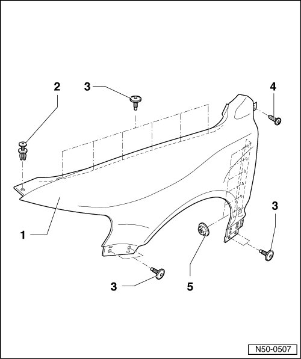
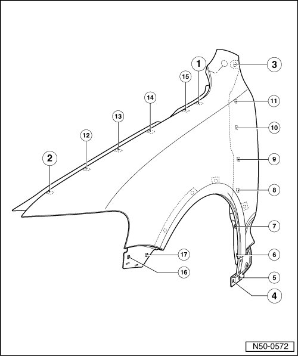

Fender Overview
Fender
--> [ Front Fender Assembly Overview ]
--> [ Front Fender Bolt Sequence ]
Front Fender Assembly Overview
• The illustration shows the left side. It can also be applied to the right side.

1 Fender
• Material PUR RIM
2 Spreader clip
3 Bolt
• Bolt sequence must be followed. Refer to --> [ Front Fender Bolt Sequence ].
• Quantity: 10
• 6 Nm
4 Bolt
• 2.5 Nm
5 Hex nut
• Bolt sequence must be followed. Refer to --> [ Front Fender Bolt Sequence ].
• Quantity: 6
• 6 Nm
Front Fender Bolt Sequence
• The specified bolting sequence must be strictly maintained.

- Refer to the illustration for sequence in which bolts and nuts - 1 - through - 17 - are tightened.